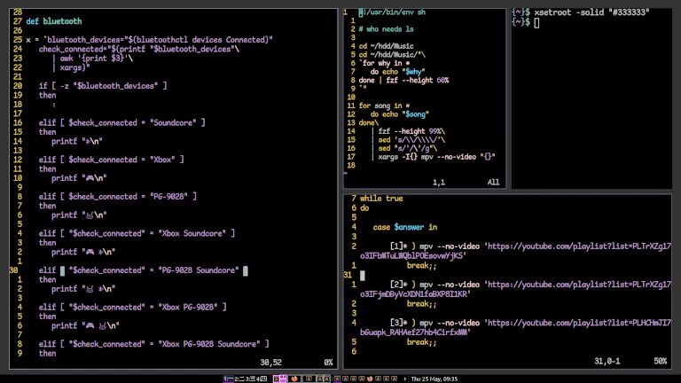

My Journey
My experience with Linux has definitely been a mixed experience. I started using Linux as my main operating system about three years ago. In the start i found Linux to be quite complex and had problems understanding it. But over time i learned more and became more comfortable with it.
After a while i hit a point where I had learned more than what was strictly necessary. Despite that, this learning phase allowed me to gain a deeper understanding of Linux.
Looking back, my journey with Linux has been filled with initial confusion and subsequent growth. It has been a rewarding experience that has shaped my perspective on operating systems and provided me with valuable knowledge and skills.
The image above showcases my Linux setup using dwm, a lightweight window manager for unix-like operating systems, The name itself is somewhat ironic, as it shares the same name as the window managerused in the Windows. dwm has been my window manager of choice for a long time, offering speed and limitless customizion. This of course has the catch that dwm can be quite complex due to its require ment of editing the source code. The reason for this is that the developers prioritize code minimalism. But despite its complexities, dwm remains a stable tool that has worked for me and my workflow.
In the image I showed multiple scripts, below is one of those:
cd ~/hdd/Music
cd ~/hdd/Music/"\
`for folder in *
do echo "$folder"
done | fzf --height 60%
`"
for song in *
do echo "$song"
done\
| fzf --height 99%\
| sed 's/\\/\\\\/'\
| sed "s/'/\'/g"\
| xargs -I{} mpv "{}"
The above script is a test script I made to play music, what it does is that it first selects a folder then plays a song inside the folder.
The above image shows the output of one script I've made, this script is something i used along side dwm since dwm doesn't have a inbuild status bar so I made one myself, the reality is that I didn't have to but I did it for the learning experience.
In my Linux journey, I came across the i3 window manager, which I decided to try out. My initial impression of i3 was a bit confusing since it can be quite complex. However, as I delved deeper into the world of window managers, particularly when I encountered dwm later on, I realized that i3 is relatively simpler in comparison. Despite its initial learning curve, i3 proved to be more approachable and user-friendly compared to the intricacies of dwm. Personality I think i3 is a very good window manager to beginners but for absolute beginners it could still be a hassle.

The KDE desktop environment is something I've used occasionally during my time with Linux. As a contrast to other window managers, plasma is a full desktop environment, making it more similar to how Windows functions. Personaly say it is one of the best desktop environments for Linux, suitable for both experienced users and beginners. While most people don't require complex tiling window managers and prefer a simple desktop, Plasma offers just that. However, for more experienced users, Plasma is also highly customizable, providing extensive options for personalization.